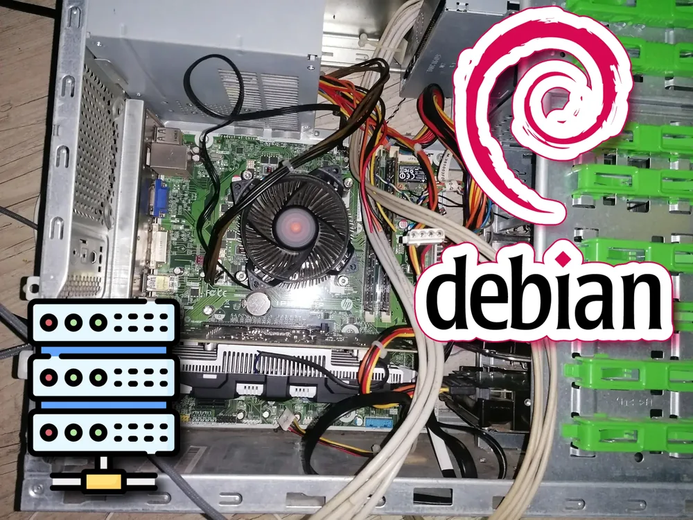
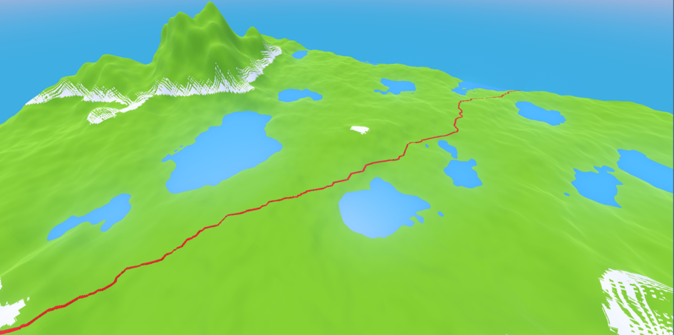
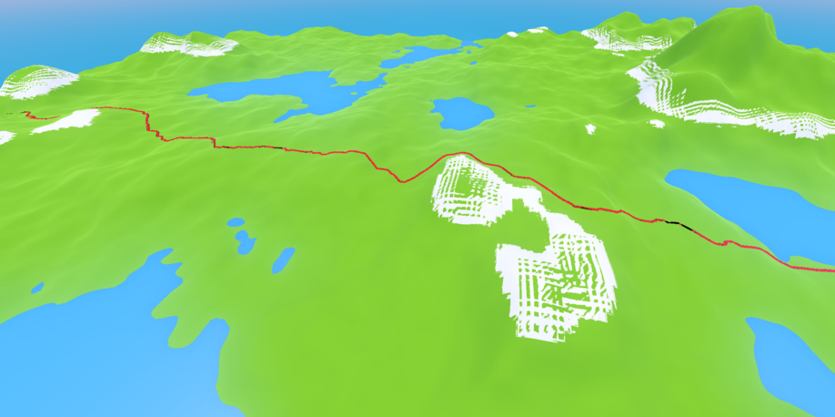
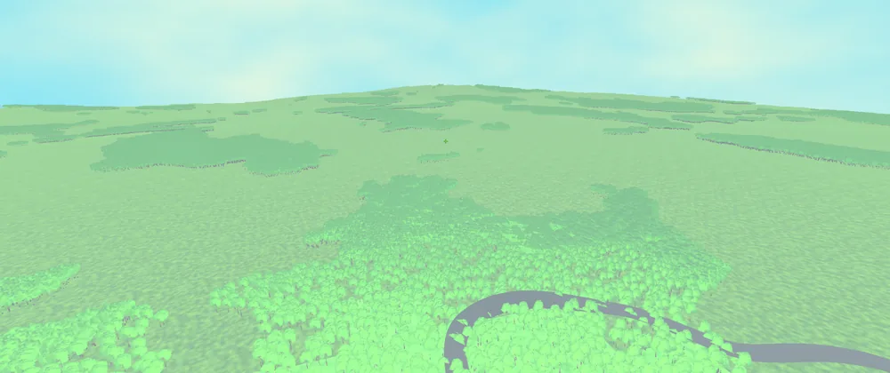
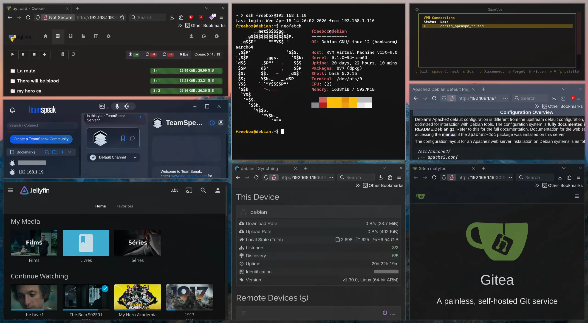

Programmation C bas niveau sur architecture embarquée
Gestion mémoire par bits
Génération d'aléatoire
Algorithmes de propagation (floodfill)
Cube
Rasteriseur 3D affichant un cube, en C sur calculatrice TI-83 CE
Programmation C bas niveau sur architecture embarquée
Compréhension des bases d'un moteur 3D
Calculs de la projection perspective
Buffer Swapping pour un affichage fluide
Godot Engine
Skribbl.godo
Réécriture complète du frontend de Skribbl.io sous Godot Engine
Bases networking Websocket
UI format mobile/desktop
Gestion écriture/lecture de textures
Support de plugins
UI de paramétrage procédural
Terrain procédural
Générateur de terrain infini
Algorithmes de bruit (Perlin / Simplex)
Compréhension de l'algorithme de pathfinding A*
Terminal
Vm linux dans un jeu
interpréteur ANSI vers BBCode
Gestion de VM QEMU
Réseau

Serveur personnel sous Debian
Administration système Linux (Debian)
Sécurisation réseau
Conteneurisation Docker
Déploiement et maintenance de services self-hosted
Sloom
Sloom est une entreprise fictive de location d'espaces de coworking.
Notre mission : créer un site vitrine présentant les activités de l'entreprise,
ainsi qu'une interface permettant aux clients de s'inscrire, se connecter et réserver une salle à la date de leur choix.
Ce programme en C pour calculatrice TI-83 Premium CE / TI-83 CE est un démineur classique
implémenté sur une grille de 9x9 cases, conçu pour illustrer la gestion de la logique de jeu et
de l’affichage interactif sur un écran limité
Compétences utilisées :
Programmation C bas niveau sur architecture embarquée
Ce programme en C pour calculatrice TI-83 Premium CE / TI-83 CE est un rasteriseur 3D minimaliste
qui démontre l’affichage de graphiques 3D en temps réel sur un matériel très contraint.
Le cœur du programme repose sur un pipeline 3D simplifié :
il définit un cube à l’aide de sommets dans l’espace 3D,
applique des transformations de rotation autour de l'axe Y,
puis projette ces points sur l’écran 2D de la calculatrice à l’aide d’une projection perspective.
Compétences utilisées :
Programmation C bas niveau sur architecture embarquée
Skribbl.io est un jeu en ligne multijoueur de dessin et de devinettes.
Les joueurs dessinent à tour de rôle un mot choisi,
tandis que les autres tentent de le deviner le plus rapidement possible afin de marquer des points.
J’ai entièrement recodé le frontend du jeu sous Godot Engine (moteur de jeu libre)
afin d’y ajouter la prise en charge des plugins, des thèmes personnalisés, une UI améliorée et davantage de
personnalisation.
J’y ai également ajouté la prise en charge du format de fichier .SKD,
permettant de sauvegarder et de charger les dessins trait par trait afin de créer des timelapses.
Compétences utilisées :
Bases networking Websocket
UI format mobile/desktop
Gestion écriture/lecture de textures
Support de plugins
UI de paramétrage procédural
Terrain procédural
J'ai créé un générateur de terrain infini développé avec Godot Engine,
visant à explorer les techniques de génération procédurale, et d'utilisation de noise maps dans un environnement 3D.
Le terrain est créé dynamiquement autour du joueur à l’aide de chunks chargés et déchargés automatiquement selon la position de la caméra.
Chaque chunk est généré de manière procédurale à partir de bruit cohérent (Perlin + Fractales),
ce qui permet une continuité naturelle du relief.

J’y ai également développé un générateur de routes procédural basé sur l’algorithme A*
Le calcul des chemins s’appuie sur une carte de difficulté de déplacement dérivée du terrain
(dénivelés, altitude, types de sol), afin de trouver le chemin le plus praticable.

Mis à jour mai 2026 : réécriture complète du système afin d’ajouter un système de biomes, d'instanciation de la végétation,
les collisions et des appels directs au GPU pour des performances optimales, même sur des ordinateurs peu puissants.

Compétences utilisées :
Algorithmes de bruit (Perlin / Simplex)
Compréhension de l'algorithme de pathfinding A*
VM Linux dans un jeu
Ce projet consiste à intégrer une machine virtuelle QEMU dans un jeu développé avec Godot Engine.
L’objectif est de permettre l’exécution de systèmes ou programmes dans un environnement directement dans le jeu,
avec un affichage fidèle du terminal grâce à un interpréteur des codes ANSI.
Le joueur peut interagir avec cette VM via une interface terminal intégrée, permettant de lancer des commandes,
visualiser des sorties colorées.
Compétences utilisées :
Interpréteur ANSI vers BBCode
Gestion de VM QEMU
Serveur personnel sous Debian
Ce projet consiste à mettre en place un serveur sous Debian permettant d’héberger
plusieurs services réseau et applicatifs afin de centraliser le stockage, le multimédia,
l’automatisation et les outils de développement.
Services installés :
SSH : accès distant sécurisé au serveur pour l’administration en ligne de commande.
FTP / SFTP : transfert de fichiers entre le serveur et des machines clientes.
VPN : WireGuard et OpenVPN avec utilisateurs, pour accéder à mon réseau local depuis l’extérieur ou de mon téléphone.
Samba : partage de fichiers en réseau local compatible Windows et Linux, adapté au streaming vidéo.
Jellyfin : serveur multimédia pour le streaming de films, séries et musique.
Git : hébergement de dépôts de code pour le versioning et la collaboration, afin de ne plus être dépendant des limites de GitHub.
Pyload : gestionnaire de téléchargements automatisés.
FreshRSS : agrégateur de flux RSS auto-hébergé pour centraliser les actualités et ma veille informatique.
TeamSpeak : serveur vocal pour la communication en temps réel, chiffré et gratuit.
Syncthing : synchronisation automatique de projets et sauvegardes.
Bots Python : scripts automatisés pour diverses tâches et intégrations de développement.
Ollama (IA locale) : exécution de modèles d’intelligence artificielle en local sans cloud.
Un serveur personnel complet, pensé pour l’autonomie et le contrôle total de mon infrastructure, je réduis progressivement ma dépendance aux services cloud externes,
tout en gardant un contrôle total sur mes données personnelles, leur stockage et leur sécurité.

Compétences utilisées :
Administration système Linux (Debian)
Sécurisation réseau
Conteneurisation Docker
Déploiement et maintenance de services self-hosted